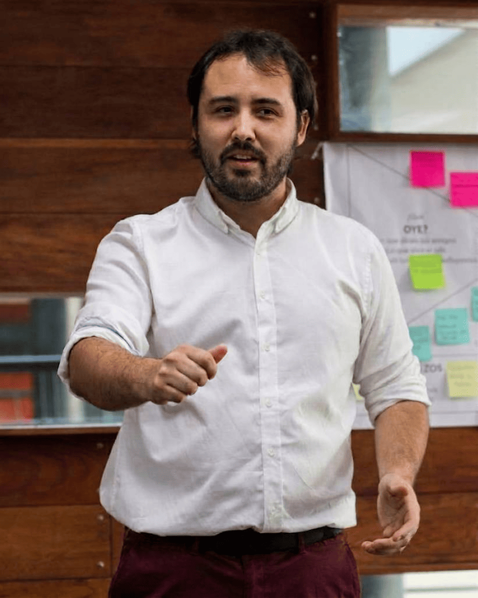

Co-fundador · Diseño estratégico
Cristian Aguilar
Intersección de innovación, diseño estratégico y experiencia. Ingeniero en Diseño de Productos, Magíster en Innovación (UAI), profesor de la Facultad de Negocios UAI, candidato a Doctor en Diseño (Universidad de Palermo), evaluador acreditado de CORFO.
LinkedIn ↗